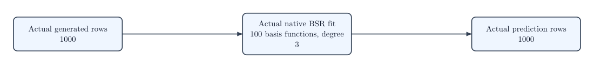
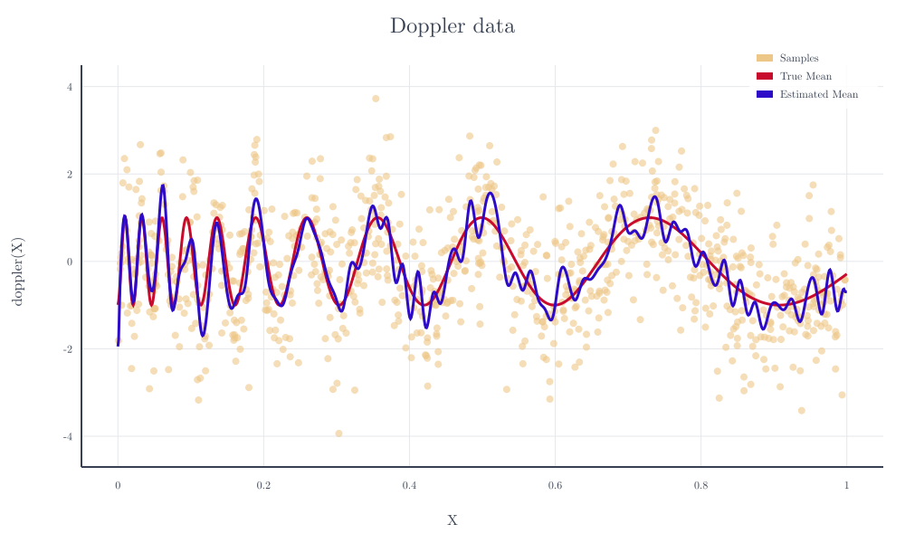
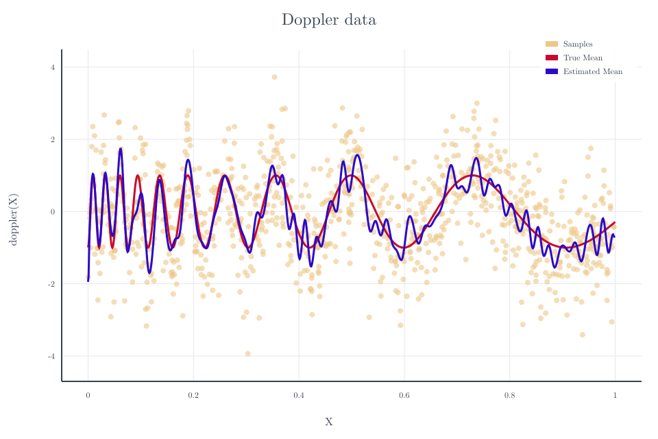
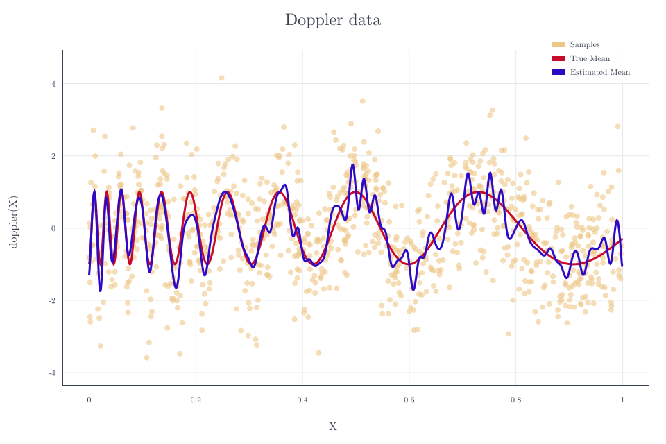

Native plotting across language bindings
Abstract
Retain the original sixteen complete language programs: the same noisy Doppler target,1000 generated sample positions and a canonical B-spline fit, rendered through the native plotting API. An introductory complete C++ program makes the data-fit-predict-plot path visible. Each program owns its original seed and executes independently; the pictures are language-specific executions, not asserted byte-identical random samples or fits across ecosystems.
Data, model and native graphics
For each program the target is sin(20/(x+0.25)) on[0,1], with additive standard-normal noise. The100 argument to BSR selects100 equally spaced cubic basis functions, as in the original. This is regression, not a classification benchmark or a comparison of language performance. Synthetic data is the appropriate controlled fixture; no external dataset is introduced.
#include <dm/dm.hpp>
int main() {
dm::set_seed(42);
const auto x = dm::runif(0, 1, 1000);
const auto y = dm::sin(20 / (x + .25)) + dm::rnorm(0, 1, 1000);
const dm::BSR fit(x, y, 100);
const auto grid = dm::seql(0, 1, 1000);
const auto prediction = fit.predict(grid);
dm::graphics::Diagram d;
d.node("data", {0, 0}, std::format("Actual generated rows\n{}", x.size()));
d.node("fit", {8, 0},
std::format("Actual native BSR fit\n{} basis functions, degree {}",
fit.basis_size(), fit.degree()));
d.node("prediction", {16, 0},
std::format("Actual prediction rows\n{}", prediction.size()));
d.edge("data", "fit").edge("fit", "prediction");
std::filesystem::create_directories("build");
d.save_svg("build/plot_pipeline.svg");
std::print("| actual training positions | responses | prediction grid | predictions |\n| ---: | ---: | ---: | ---: |\n| {} | {} | {} | {} |\n",
x.size(), y.size(), grid.size(), prediction.size());
}| actual training positions | responses | prediction grid | predictions |
|---|---|---|---|
| 1000 | 1000 | 1000 | 1000 |

Sixteen complete original language programs
Plot Example
A simple plotting example: noisy samples of the Doppler function, the true mean, and a B-spline fit -- the same program in C++ and in each language binding: C#, D, Go, Guile, Java, JavaScript, Lua, OCaml, Octave, Perl, PHP, Python, R, Ruby and Tcl.
Each block runs in the nix shell .#report-<language>, which provides the
language and its nix-built datamunge binding, so nothing needs building first
(the first run of a language builds its binding, later runs reuse it). Each
program saves its figure under build/, and the block shows it.
#include <dm/dm.hpp>
int main() {
dm::set_seed(42);
const auto doppler = [](const dm::Vector<> & x) {
return dm::sin(20 / (x + 0.25));
};
const auto x = dm::runif(0, 1, 1000);
const auto y = doppler(x) + dm::rnorm(0, 1, 1000);
const auto xseq = dm::seql(0, 1, 1000);
const auto yseq = doppler(xseq);
const dm::BSR bsr(x, y, 100);
const auto yfit = bsr.predict(xseq);
const auto plt =
dm::plot().title("Doppler data").points(x, y, "Samples", "#edc78799").lines(xseq, yseq, "True Mean", "#c80a2c", 3.).lines(xseq, yfit, "Estimated Mean", "#2c0ac8", 3.).x_label("X").y_label("doppler(X)").size(1000, 600);
dm::mkdir("build");
plt.save("build/plot.svg");
}
import os
import numpy as np
from pydatamunge import datamunge as dm
def doppler(x):
return np.sin(20 / (np.asarray(x) + 0.25))
dm.set_seed(42)
x = np.array(dm.runif(0, 1, 1000))
y = doppler(x) + np.array(dm.rnorm(0, 1, 1000))
xseq = np.array(dm.seql(0, 1, 1000))
yseq = doppler(xseq)
yfit = dm.BSplineRegression(x, y, 100).predict(xseq)
os.makedirs("build", exist_ok=True)
(
dm.RPlot.create().title("Doppler data").points(
x, y, "Samples", dm.RGB(237, 199, 135, 0.6), 4.0
).lines(xseq, yseq, "True Mean", dm.RGB(200, 10, 44), 3.0).lines(
xseq, yfit, "Estimated Mean", dm.RGB(44, 10, 200), 3.0
).xlab("X").ylab("doppler(X)").save("build/plot_python.svg")
)
# Keep and reference the native renderer's saved SVG.
import shutil
os.makedirs("figures", exist_ok=True)
shutil.copyfile("build/plot_python.svg", "figures/plot_python.svg")
print(r"\image(figures/plot_python.svg)")
With base R for the random data and vector math:
suppressPackageStartupMessages(library(datamunger))
doppler <- function(x) sin(20 / (x + 0.25))
set.seed(42)
x <- runif(1000)
y <- doppler(x) + rnorm(1000)
xseq <- seq(0, 1, length.out = 1000)
yseq <- doppler(xseq)
yfit <- BSplineRegression$new(x, y, 100)$predict(xseq)
dir.create("build", showWarnings = FALSE)
invisible(
RPlot$new()$title("Doppler data")$points(
x,
y,
"Samples",
RGB$new(237, 199, 135, 0.6),
4.0
)$
lines(
xseq,
yseq,
"True Mean",
RGB$new(200, 10, 44),
3.0
)$
lines(
xseq,
yfit,
"Estimated Mean",
RGB$new(44, 10, 200),
3.0
)$
xlab(
"X"
)$
ylab(
"doppler(X)"
)$
save(
"build/plot_r.svg"
)
)
The binding is a NuGet package built by nix (generated by Rosetta), referenced
with a #:package directive:
#:package Datamunge@0.0.1
using Datamunge;
static List<double> Doppler(IEnumerable<double> x) => x.Select(xi => Math.Sin(20 / (xi + 0.25))).ToList();
Functions.SetSeed(42);
var x = Functions.Runif(0, 1, 1000);
var y = Doppler(x).Zip(Functions.Rnorm(0, 1, 1000), (f, e) => f + e).ToList();
var xseq = Functions.Seql(0, 1, 1000);
var yseq = Doppler(xseq);
var yfit = new BSplineRegression(x, y, 100).Predict(xseq);
Directory.CreateDirectory("build");
RPlot.Create()
.Title("Doppler data")
.Points(x, y, "Samples", new RGB("#edc78799"))
.Lines(xseq, yseq, "True Mean", new RGB("#c80a2c"), 3.0)
.Lines(xseq, yfit, "Estimated Mean", new RGB("#2c0ac8"), 3.0)
.XLabel("X").YLabel("doppler(X)")
.Size(1000, 600)
.Save("build/plot_csharp.svg");
Compiled with ldc2; -i pulls in the generated binding module, which the report
shell points to with $DATAMUNGED_SOURCE:
import std.algorithm : map;
import std.array : array;
import std.file : mkdirRecurse;
import std.math : sin;
import std.range : zip;
import datamunge;
DVector doppler(DVector x) {
return new DVector(x[].map!(xi => sin(20 / (xi + 0.25))).array);
}
void main() {
set_seed(42);
auto x = runif(0, 1, 1000);
auto y = new DVector(zip(doppler(x)[], rnorm(0, 1, 1000)[]).map!(p => p[0] + p[1]).array);
auto xseq = seql(0, 1, 1000);
auto yseq = doppler(xseq);
auto yfit = new BSplineRegression(x, y, 100).predict(xseq);
mkdirRecurse("build");
RPlot.create()
.title("Doppler data")
.points(x, y, "Samples", new RGB(237, 199, 135, 0.6), 4.0)
.lines(xseq, yseq, "True Mean", new RGB(200, 10, 44), 3.0)
.lines(xseq, yfit, "Estimated Mean", new RGB(44, 10, 200), 3.0)
.xlab("X")
.ylab("doppler(X)")
.save("build/plot_d.svg");
}
The binding is generated by Rosetta; the report shell's workspace (GOWORK)
holds the nix-built module datamunge and CGO_LDFLAGS points cgo at its
libdatamunge_go. Calls return (T, error) and vectors are []float64:
package main
import (
"datamunge"
"math"
"os"
)
// doppler(x) element-wise.
func doppler(x []float64) []float64 {
y := make([]float64, len(x))
for i, v := range x {
y[i] = math.Sin(20 / (v + 0.25))
}
return y
}
func main() {
m := datamunge.Must[[]float64]
check := func(_ any, err error) {
if err != nil {
panic(err)
}
}
check(nil, datamunge.SetSeed(42))
x := m(datamunge.Runif(0, 1, 1000))
noise := m(datamunge.Rnorm(0, 1, 1000))
y := doppler(x)
for i := range y {
y[i] += noise[i] // y = doppler(x) + noise
}
xseq := m(datamunge.Seql(0, 1, 1000))
yseq := doppler(xseq)
fit := datamunge.Must(datamunge.NewBSplineRegression(x, y, 100))
yfit := m(fit.Predict(xseq))
color := func(hex string) *datamunge.RGB { return datamunge.Must(datamunge.NewRGBColor(hex)) }
os.MkdirAll("build", 0o755)
// Builder methods return the plot itself (and an error), so they are called in turn.
plot := datamunge.Must(datamunge.RPlotCreate())
check(plot.Title("Doppler data"))
check(plot.PointsWithColor(x, y, "Samples", color("#edc78799")))
check(plot.LinesWithStrokeWidth(xseq, yseq, "True Mean", color("#c80a2c"), 3.0))
check(plot.LinesWithStrokeWidth(xseq, yfit, "Estimated Mean", color("#2c0ac8"), 3.0))
check(plot.XLabel("X"))
check(plot.YLabel("doppler(X)"))
check(plot.Size(1000, 600))
check(nil, plot.Save("build/plot_go.svg"))
}The binding is generated by Rosetta; the report shell puts the nix-built module
(datamunge) and its extension on GUILE_LOAD_PATH. Classes are GOOPS classes
and methods generics, and vectors are lists:
(use-modules (oop goops) (datamunge))
(define (doppler x) (map (lambda (xi) (sin (/ 20 (+ xi 0.25)))) x))
(set-seed! 42)
(define x (runif 0.0 1.0 1000))
(define y (map + (doppler x) (rnorm 0.0 1.0 1000)))
(define xseq (seql 0.0 1.0 1000))
(define yseq (doppler xseq))
(define yfit (predict (make <b-spline-regression> x y 100) xseq))
(unless (file-exists? "build") (mkdir "build"))
(define plot (r-plot-create))
(title plot "Doppler data")
(points plot x y "Samples" (make <rgb> "#edc78799"))
(lines plot xseq yseq "True Mean" (make <rgb> "#c80a2c") 3.0)
(lines plot xseq yfit "Estimated Mean" (make <rgb> "#2c0ac8") 3.0)
(x-label plot "X")
(y-label plot "doppler(X)")
(size plot 1000 600)
(save plot "build/plot_guile.svg")
The binding is generated by Rosetta; the report shell puts the nix-built
datamunge.jar on CLASSPATH and names its JNI library in
DATAMUNGE_JAVA_LIBRARY. Run as a single-file program; vectors are double[]:
import datamunge.BSplineRegression;
import datamunge.Datamunge;
import datamunge.RGB;
import datamunge.RPlot;
import java.util.Arrays;
public class DopplerPlot {
static double[] doppler(double[] x) {
return Arrays.stream(x).map(v -> Math.sin(20 / (v + 0.25))).toArray();
}
public static void main(String[] args) {
Datamunge.setSeed(42);
double[] x = Datamunge.runif(0, 1, 1000);
double[] noise = Datamunge.rnorm(0, 1, 1000);
double[] f = doppler(x);
double[] y = new double[x.length];
for (int i = 0; i < y.length; i++) y[i] = f[i] + noise[i];
double[] xseq = Datamunge.seql(0, 1, 1000);
double[] yseq = doppler(xseq);
double[] yfit = new BSplineRegression(x, y, 100).predict(xseq);
new java.io.File("build").mkdirs();
RPlot.create().title("Doppler data")
.points(x, y, "Samples", new RGB("#edc78799"))
.lines(xseq, yseq, "True Mean", new RGB("#c80a2c"), 3.0)
.lines(xseq, yfit, "Estimated Mean", new RGB("#2c0ac8"), 3.0)
.xLabel("X").yLabel("doppler(X)").size(1000, 600)
.save("build/plot_java.svg");
}
}
const fs = require("fs");
const dm = require("@datamunge/datamungejs");
// Native vectors convert to ordinary JavaScript arrays.
function doppler(x) {
return x.map((xi) => Math.sin(20 / (xi + 0.25)));
}
dm.set_seed(42);
const x = dm.unif(0, 1, 1000);
const y = doppler(x);
const eps = dm.rnorm(0, 1, 1000);
for (let i = 0; i < y.length; i++) y[i] += eps[i];
const xseq = dm.seql(0, 1, 1000);
const yseq = doppler(xseq);
const yfit = new dm.BSplineRegression(x, y, 100).predict(xseq);
fs.mkdirSync("build", { recursive: true });
dm.RPlot.create()
.title("Doppler data")
.points(x, y, "Samples", new dm.RGB(237, 199, 135, 0.6), 4.0)
.lines(xseq, yseq, "True Mean", new dm.RGB(200, 10, 44), 3.0)
.lines(xseq, yfit, "Estimated Mean", new dm.RGB(44, 10, 200), 3.0)
.xlab("X")
.ylab("doppler(X)")
.save("build/plot_javascript.svg");local dm = require("datamunge")
-- Native vectors convert to ordinary one-based Lua tables.
local function doppler(x)
local y = {}
for i = 1, #x do
y[i] = math.sin(20 / (x[i] + 0.25))
end
return y
end
dm.set_seed(42)
local x = dm.runif(0, 1, 1000)
local y = doppler(x)
local eps = dm.rnorm(0, 1, 1000)
for i = 1, #y do
y[i] = y[i] + eps[i]
end
local xseq = dm.seql(0, 1, 1000)
local yseq = doppler(xseq)
local yfit = dm.BSplineRegression(x, y, 100):predict(xseq)
os.execute("mkdir -p build")
dm.RPlot
.create()
:title("Doppler data")
:points(x, y, "Samples", dm.RGB(237, 199, 135, 0.6), 4.0)
:lines(xseq, yseq, "True Mean", dm.RGB(200, 10, 44), 3.0)
:lines(xseq, yfit, "Estimated Mean", dm.RGB(44, 10, 200), 3.0)
:xlab("X")
:ylab("doppler(X)")
:save("build/plot_lua.svg")
Run in the toplevel, loading the binding with findlib:
#use "topfind";;
#require "datamunge";;
open Datamunge
let doppler x = Array.map (fun xi -> sin (20. /. (xi +. 0.25))) x
let rgb ?(alpha = 1.0) r g b = RGB.create_int_int_int_float ~opacity:alpha r g b
let () =
set_seed 42;
let x = runif 0. 1. 1000 in
let eps = rnorm 0. 1. 1000 in
let y = Array.map2 ( +. ) (doppler x) eps in
let xseq = seql 0. 1. 1000 in
let yseq = doppler xseq in
let bsr = BSplineRegression.create x y 100 in
let yfit = BSplineRegression.predict bsr xseq in
if not (Sys.file_exists "build") then Sys.mkdir "build" 0o755;
let plot = RPlot.create () in
(* Each setter returns the plot: ignore it (or chain through it). *)
ignore (RPlot.title plot "Doppler data");
ignore (RPlot.points ~label:"Samples" ~color:(rgb ~alpha:0.6 237 199 135) ~marker_size:4.0 plot x y);
ignore (RPlot.lines ~label:"True Mean" ~color:(rgb 200 10 44) ~stroke_width:3.0 plot xseq yseq);
ignore (RPlot.lines ~label:"Estimated Mean" ~color:(rgb 44 10 200) ~stroke_width:3.0 plot xseq yfit);
ignore (RPlot.xlab plot "X");
ignore (RPlot.ylab plot "doppler(X)");
RPlot.save plot "build/plot_ocaml.svg"
The binding is generated by Rosetta; the report shell puts the nix-built package
+datamunge and its oct-file on the load path. Vectors are row vectors, and
methods chain:
doppler = @(x) sin (20 ./ (x + 0.25));
datamunge.set_seed (42);
x = datamunge.runif (0, 1, 1000);
y = doppler (x) + datamunge.rnorm (0, 1, 1000);
xseq = datamunge.seql (0, 1, 1000);
yseq = doppler (xseq);
yfit = datamunge.BSplineRegression (x, y, 100).predict (xseq);
[~] = mkdir ("build");
datamunge.RPlot.create () ...
.title ("Doppler data") ...
.points (x, y, "Samples", datamunge.RGB ("#edc78799")) ...
.lines (xseq, yseq, "True Mean", datamunge.RGB ("#c80a2c"), 3.0) ...
.lines (xseq, yfit, "Estimated Mean", datamunge.RGB ("#2c0ac8"), 3.0) ...
.x_label ("X").y_label ("doppler(X)") ...
.size_ (1000, 600) ...
.save ("build/plot_octave.svg");
Vectors come back as array references:
use strict;
use warnings;
use File::Path qw(make_path);
use Datamunge;
sub doppler { [ map { sin(20 / ($_ + 0.25)) } @{ $_[0] } ] }
Datamunge::set_seed(42);
my $n = 1000;
my $x = Datamunge::runif(0, 1, $n);
my $eps = Datamunge::rnorm(0, 1, $n);
my $f = doppler($x);
my $y = [ map { $f->[$_] + $eps->[$_] } 0 .. $n - 1 ];
my $xseq = Datamunge::seql(0, 1, $n);
my $yseq = doppler($xseq);
my $yfit = Datamunge::BSplineRegression->new($x, $y, 100)->predict($xseq);
make_path("build");
Datamunge::RPlot::create()
->title("Doppler data")
->points($x, $y, "Samples", Datamunge::RGB->new("#edc78799"))
->lines($xseq, $yseq, "True Mean", Datamunge::RGB->new("#c80a2c"), 3.0)
->lines($xseq, $yfit, "Estimated Mean", Datamunge::RGB->new("#2c0ac8"), 3.0)
->x_label("X")
->y_label("doppler(X)")
->size(1000, 600)
->save("build/plot_perl.svg");
The <?php tag is added when the block runs:
set_seed(42);
function doppler($x) {
$y = new DVector($x->size());
for ($i = 0; $i < $x->size(); $i++) $y->set($i, sin(20 / ($x->get($i) + 0.25)));
return $y;
}
$n = 1000;
$x = runif(0, 1, $n);
$f = doppler($x);
$eps = rnorm(0, 1, $n);
$y = new DVector($n);
for ($i = 0; $i < $n; $i++) $y->set($i, $f->get($i) + $eps->get($i));
$xseq = seql(0, 1, $n);
$yseq = doppler($xseq);
$bsr = new BSplineRegression($x, $y, 100);
$yfit = $bsr->predict($xseq);
@mkdir("build");
RPlot::create()->title("Doppler data")
->points($x, $y, "Samples", new RGB("#edc78799"))
->lines($xseq, $yseq, "True Mean", new RGB("#c80a2c"), 3.0)
->lines($xseq, $yfit, "Estimated Mean", new RGB("#2c0ac8"), 3.0)
->x_label("X")->y_label("doppler(X)")->size(1000, 600)
->save("build/plot_php.svg");
The binding is generated by Rosetta; the report shell puts the nix-built
datamunge.rb and its native extension on RUBYLIB. Vectors are Arrays:
require "fileutils"
require "datamunge"
def doppler(x) = x.map { |xi| Math.sin(20 / (xi + 0.25)) }
Datamunge.set_seed(42)
x = Datamunge.runif(0, 1, 1000)
y = doppler(x).zip(Datamunge.rnorm(0, 1, 1000)).map { |f, e| f + e }
xseq = Datamunge.seql(0, 1, 1000)
yseq = doppler(xseq)
yfit = Datamunge::BSplineRegression.new(x, y, 100).predict(xseq)
FileUtils.mkdir_p("build")
Datamunge::RPlot.create
.title("Doppler data")
.points(x, y, "Samples", Datamunge::RGB.new("#edc78799"))
.lines(xseq, yseq, "True Mean", Datamunge::RGB.new("#c80a2c"), 3.0)
.lines(xseq, yfit, "Estimated Mean", Datamunge::RGB.new("#2c0ac8"), 3.0)
.x_label("X").y_label("doppler(X)")
.size(1000, 600)
.save("build/plot_ruby.svg")
The binding is generated by Rosetta; the report shell puts the nix-built package
directory datamunge/ on TCLLIBPATH. Classes are TclOO classes in
::datamunge (namespace path makes them visible unqualified), and vectors are
Tcl lists:
package require datamunge
namespace path ::datamunge
proc doppler {x} {lmap xi $x {expr {sin(20 / ($xi + 0.25))}}}
set_seed 42
set x [runif 0 1 1000]
set y [lmap fx [doppler $x] e [rnorm 0 1 1000] {expr {$fx + $e}}]
set xseq [seql 0 1 1000]
set yseq [doppler $xseq]
set yfit [[BSplineRegression new $x $y 100] predict $xseq]
file mkdir build
set plot [RPlot create_]
$plot title "Doppler data"
$plot points $x $y "Samples" [RGB new "#edc78799"]
$plot lines $xseq $yseq "True Mean" [RGB new "#c80a2c"] 3.0
$plot lines $xseq $yfit "Estimated Mean" [RGB new "#2c0ac8"] 3.0
$plot x_label "X"
$plot y_label "doppler(X)"
$plot size 1000 600
$plot save "build/plot_tcl.svg"
Verification scope
All original language programs and their native package-shell selection are retained. The relative Git-flake reference now resolves from this report directory to the repository root. The C++ diagram uses the working-tree pkg-config selection during batch verification. All sixteen language package-shell programs passed actual execution.
The shared ten-document batch passes the native regression, sanitizer, documentation and installed-header gates. All seventeen programs and their saved native SVGs pass execution and both HTML and Markdown export checks.
Verification and binding conventions
All seventeen complete programs execute: the introductory native C++ diagram and
sixteen original language examples. R uses R6 $new() constructors. JavaScript
vectors are ordinary arrays and Lua vectors are ordinary one-based tables. Each
language uses its Nix report shell and saves a local SVG. The language packages
share the canonical native fit and renderer; independently seeded language
random generators need not produce the same samples or fitted curve. The first
run builds missing packages; later runs reuse them. Actual execution receipts
and both document exports are retained under
build/mepml-conversion/batch-284-293/plot/.